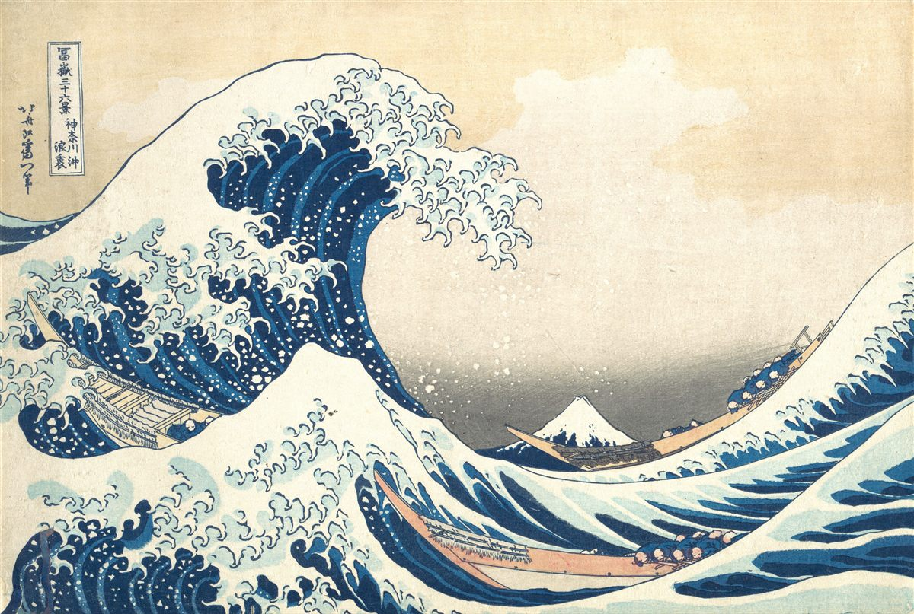
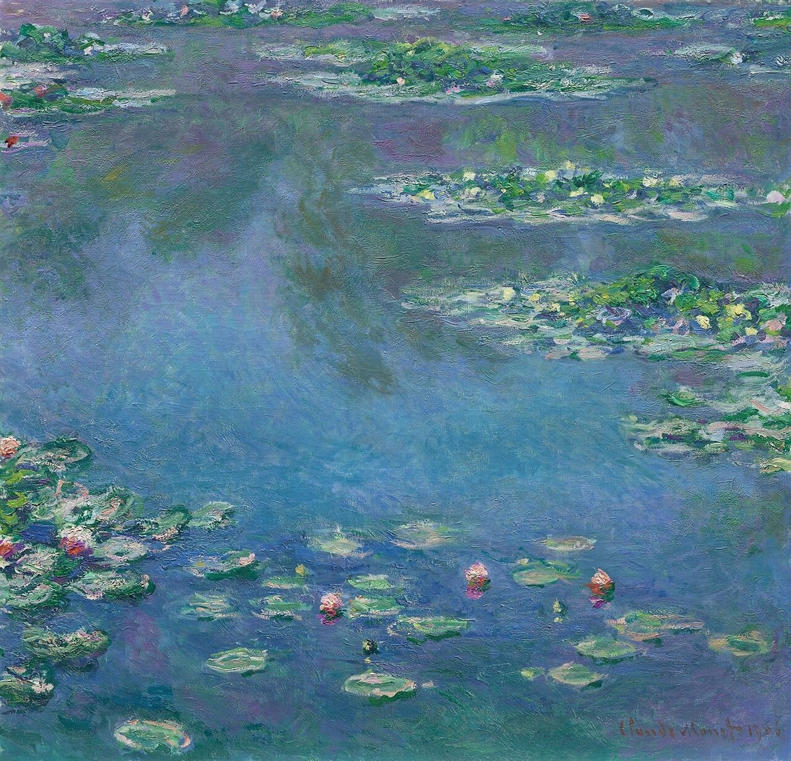
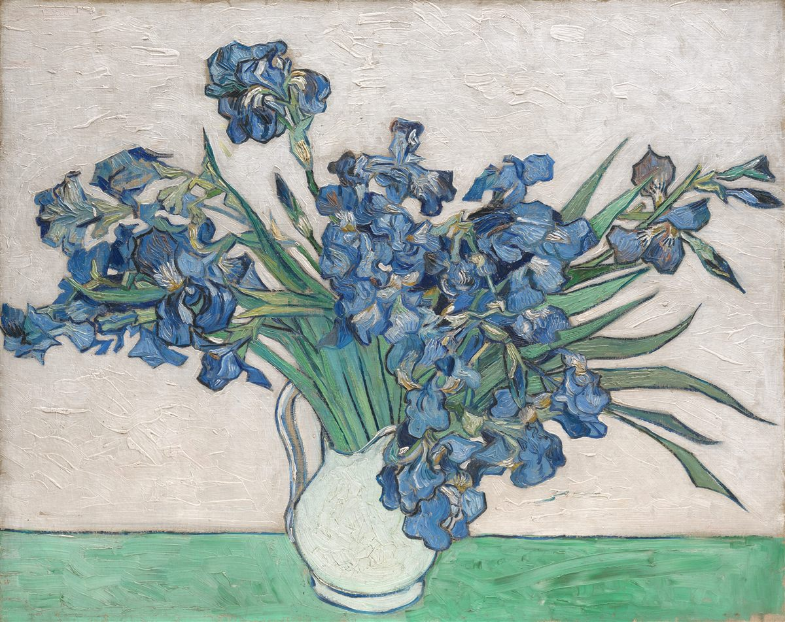
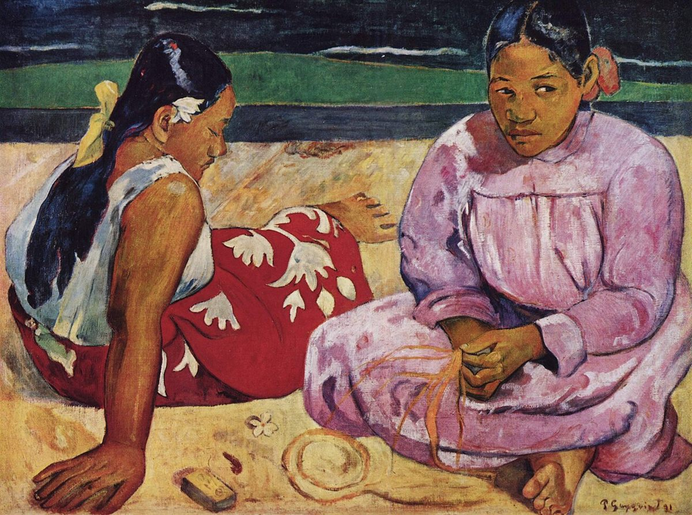

L'art mondial,
votre regard
Expositions personnalisées, accessibles aux aveugles et aux sourds, comparaisons mondiales — une plateforme culturelle unique.
Une plateforme unique au monde
Expositions spéciales
Chargement des expositions…
Construisez votre exposition
Sélectionnez vos préférences : l'exposition se compose automatiquement à partir de notre collection et des catalogues de musées du monde entier, interrogés en direct. Seules des œuvres du domaine public sont montrées : peintures, sculptures, architecture, dessins, manuscrits, icônes, arts décoratifs et photographies.
Facultatif. Les musées décrivent rarement le mouvement d'une œuvre : la recherche est approximative.
Facultatif. Seuls les artistes morts depuis plus de 70 ans ont des œuvres dans le domaine public ; beaucoup d'œuvres anciennes ou non européennes sont anonymes.
Exposition
Accessibilité universelle
Pour les aveugles & malvoyants : description audio de chaque œuvre.
Pour les sourds & malentendants : partition visuelle animée et vibrations au rythme de l'œuvre, à ressentir en tenant son téléphone (Android).
Sélectionnez une œuvre




Parcours aveugles et malvoyantsParcours sourds et malentendants
Personnes aveugles & malvoyantes
Description audio détaillée : couleurs, formes, composition, contexte.
Une courte musique est composée en direct à partir des couleurs réelles de l'image : la couleur dominante choisit la note de départ, la luminosité le mode (majeur ou mineur), la saturation l'énergie et le contraste le tempo. Cette correspondance est une règle inventée pour ce site : ce n'est pas une musique liée à l'œuvre.
Personnes sourdes & malentendantes
Partition visuelle animée + vibrations du téléphone au même rythme (Android).
Valeurs précalculées : l'analyse des couleurs n'a pas pu être faite sur cet appareil.
Toutes les œuvres du site
Chaque œuvre du site, dans les expositions comme dans le générateur et les séances de bien-être, a son bouton « Accessibilité » : description audio, musique des couleurs, partition visuelle et vibrations. En voici quelques-unes.
Bien-être par l'art
Séances de contemplation guidées pour explorer vos émotions à travers les œuvres du domaine public.
1. Votre intention
2. Durée de la séance
3. Choisissez une œuvre
Choisissez d'abord une intention : des œuvres vous seront proposées d'après leurs couleurs.
Sources des œuvres
Musées et institutions du monde
Le générateur d'exposition puise ses œuvres, en direct, dans les collections de ces institutions. Elles sont présentées par région, selon le lieu où elles se trouvent ; certaines conservent des œuvres venues d'autres régions.
Cliquez sur le nom d'une institution pour ouvrir son site officiel ; l'icône ouvre sa fiche dans Wikidata.
Dans toutes les régions
Ces grands musées et ces bases conservent des œuvres de toutes les régions du monde, interrogées directement dans leurs catalogues ouverts. Les monuments du patrimoine mondial de l'UNESCO, ainsi que les œuvres des institutions ci-dessous, sont décrits dans Wikidata, avec des photos de Wikimedia Commons.
Liste mise à jour automatiquement à partir de la liste utilisée par le générateur.
Histoire de l'art mondiale
Mouvements, écoles et styles du monde
Le générateur peut composer une exposition autour d'un mouvement, d'une école ou d'un style. Voici ceux qu'il propose, région par région, avec quelques artistes et ce qui les caractérise. Cliquez sur « Créer une exposition » pour lancer la recherche.
Comment la recherche fonctionne
Les musées décrivent rarement le mouvement d'une œuvre dans leurs catalogues. Le site cherche donc avec des mots-clés en anglais, la langue des catalogues (par exemple « ukiyo-e » ou « Mughal »), et dans Wikidata, qui relie certaines œuvres à leur mouvement. Les résultats sont approximatifs : une œuvre peut apparaître sous un mouvement voisin, et un mouvement peu décrit peut donner peu d'œuvres.
Pourquoi certains mouvements manquent
Le droit d'auteur. Le site ne montre que des œuvres du domaine public : en France, une œuvre y entre 70 ans après la mort de son auteur. La plupart des mouvements du XXe siècle sont donc absents ou incomplets : cubisme (Picasso est mort en 1973), surréalisme, muralisme mexicain (Diego Rivera, mort en 1957, entrera dans le domaine public en 2028), école de Dakar, art aborigène contemporain, art moderne d'Afrique, d'Asie et d'Amérique latine.
Des règles différentes selon les pays. Les grands catalogues interrogés (Met, Chicago, Cleveland) appliquent le droit des États-Unis : une œuvre libre en France peut y être indiquée comme protégée, et elle n'apparaît alors pas.
Des traditions qui ne sont pas des « mouvements ». La notion de mouvement vient de l'histoire de l'art européenne. Ailleurs, l'art se décrit plutôt par peuple, atelier, dynastie ou usage rituel : un masque dogon ou une figure de reliquaire fang ne se rattachent pas à un mouvement. Pour ces œuvres, utilisez les choix Régions, Époques et Types du générateur.
Des œuvres souvent anonymes. Beaucoup d'œuvres d'Afrique, d'Océanie, des Amériques anciennes et du Moyen Âge n'ont pas d'auteur connu : la recherche par artiste ne les trouve pas.
Des savoirs à respecter. Certaines œuvres sacrées ne sont pas destinées à être montrées, comme les peintures de sable navajo ou certains objets rituels aborigènes : les musées en publient peu d'images, souvent à la demande des communautés concernées.
Liste mise à jour automatiquement à partir de la liste utilisée par le générateur.